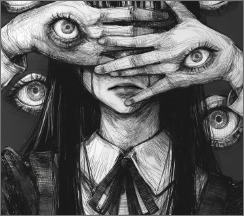

Get Spooked
Author: AfterLife Editorial Team
Published: October 12, 2026
Reading time: 4-minute read
How Zombies Can Improve Their Social Skills
Living among humans isn't always easy, especially when you look a little different or struggle to understand social situations. The good news is that social skills can be learned with practice. Whether you're trying to make friends, start conversations, or avoid accidentally scaring someone, a few simple habits can make a big difference.
.png)
Learn to Listen
Good communication isn't just about talking. It's also about listening to what others have to say. Let people finish their sentences, ask questions about their interests, and show that you're paying attention. For example, if a human tells you they enjoy gardening, you could ask what plants they grow. Just remember: eating the plants is probably not the best way to show interest.

Start with a Friendly Greeting
One of the easiest ways to start a conversation is to say hello. Try smiling, waving, or saying, "Hey, how's it going?" Remember that humans may need a little time to feel comfortable around you. Give them personal space, speak clearly, and avoid standing too close. You might be missing a few brain cells, but you can still make a great first impression!
Understanding Social Cues
Humans communicate through facial expressions, body language, and tone of voice. If someone looks uncomfortable, gives short answers, or steps away, they might need more space. Learning to recognize these signals can help you understand when to continue a conversation and when to politely step back.
Practice Makes Progress
You won't become a social expert overnight, and that's perfectly normal. Start with small interactions, such as greeting a neighbor or chatting with someone at the grocery store. Every conversation is an opportunity to learn. Be patient with yourself, respect others, and don't be afraid to make mistakes.